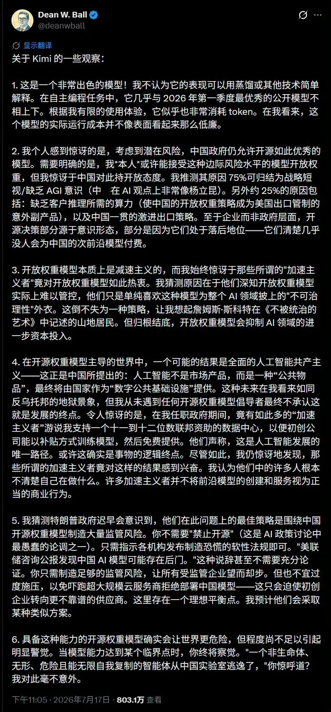

OpenAI对中国开源大模型极度担忧
来源:
太阳照常升起
发布时间:
2026-07-21
原文链接:
https://mp.weixin.qq.com/s/zRqGR8o8q_bcYLEIcyyZgA
前两天，OpenAI的战略未来团队负责人Dean Woodley Ball针对Kimi K3发表了极具美式“意识形态”的言论，把中国大陆AI企业主导的开放权重大模型称为“减速主义”，并且将中国大陆AI企业大模型进行各种“主义”和“非安全”叙事，震惊G2业界。

作者看了下中文媒体的极少数评论，对“减速主义”和“加速主义”这部分很难有效展开，更加突显作者最近整理加速主义资料的必要性。
Dean Ball于2014年毕业于纽约州汉密尔顿学院（Hamilton College），获历史学学士学位。2014-2020年任职于曼哈顿政策研究所，2020-2022年任职于卡尔文·柯立芝总统基金会，2022-2024年任职于斯坦福大学胡佛研究所。2023年开始，Dean Ball开始AI政策研究，后分别任职于乔治梅森大学Mercatus研究中心和美国创新基金会。
2025年4月，Dean Ball进入川普政府，担任白宫科技政策办公室的AI与新兴技术高级政策顾问，成为《美国AI行动计划》的主要起草人。
2026年6月，Dean Ball宣布加入OpenAI，担任"战略未来"（Strategic Futures）团队负责人。该团队不同于传统的政府事务/游说团队，其职责是前瞻6–12个月的AI发展轨迹，为OpenAI高层提供前沿政策建议，并与技术团队紧密协作。
最有意思的是，在2025年之前，Dean Ball一直是开源大模型的最有力的鼓吹手之一。
2024年4月，美国加州限制开源模型的SB 1047法案初稿发布，Ball撰写了题为《California's Effort to Strangle AI》的文章，成为该法案最突出的批评者之一。他指出，SB 1047"将实质性地关闭开源AI模型的开发，仅让能负担得起合规成本的大型企业受益"。他认为该法案的法律责任条款使前沿开源AI"具有挑战性，甚至不可能"实现，将开源模型置于"炼狱"（purgatory）状态。
2025年1月（DeepSeek-R1发布后），Ball发表了《Open-Source AI and the Future》，他写道："R1应该被视为对长期以来显而易见之事的再次确认：开源前沿AI在可预见的未来（如果不是更长时间）仍将保持相关性，它将是中美更广泛技术和经济竞争的重要向量。因此，开源是美国竞争力和国家安全的重要组成部分。"
2025年3月，Ball高度评价DeepSeek的"人才密度和多样性"，将其比作"早期的OpenAI或DeepMind、Anthropic"。他反驳了DeepSeek训练成本被"揭穿"的说法，强调其报告的是边际成本，并认为DeepSeek的诸多技术创新实际上在2024年1月就已首次出现。
到2026年3月，在Interconnects播客中，Ball对开源的态度发生了更明显的变化，他表示："我称自己是开源的精神支持者，但我的热情被这样一个事实所缓和：经济和地缘政治安全现实相当严峻。"
在Ball加入OpenAI后一个月，Kimi K3发布，他随即抛出上述充满敌意的“意识形态化”言论。
你可以理解为了，OpenAI急了。
开放权重大模型真的是“减速主义”进而会抑制大模型的投资吗？黄仁勋肯定第一个表示反对。按照黄仁勋的“主权AI”思路，开放权重大模型的本地化部署才是提升大规模投资的路径。
但从这些叙事里可以看到，“加速主义”在美国半导体和AI业界已经代表“政治正确”。区别在于，不同群体理解的“加速方式”是不同的。
今天读了不少加速主义资料，很多“西式哲学癔语”，回头再慢慢分享吧。
以上。
欢迎加入作者的知识星球！